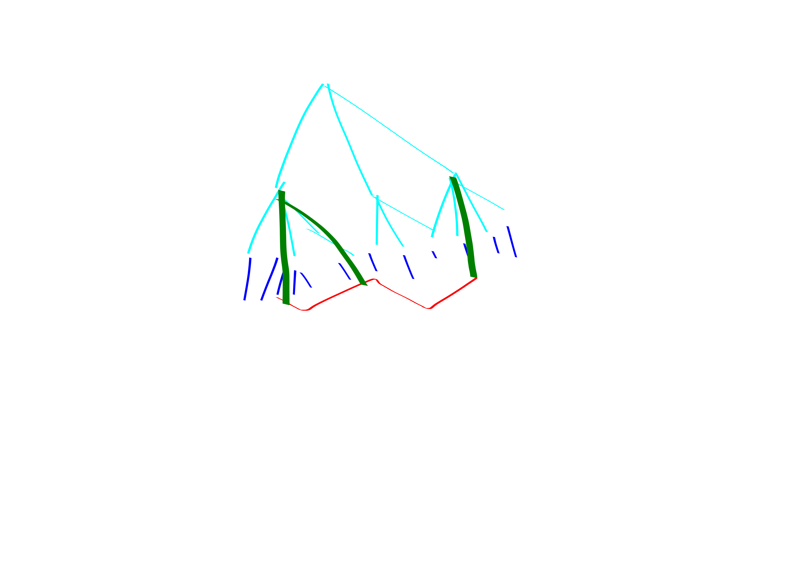
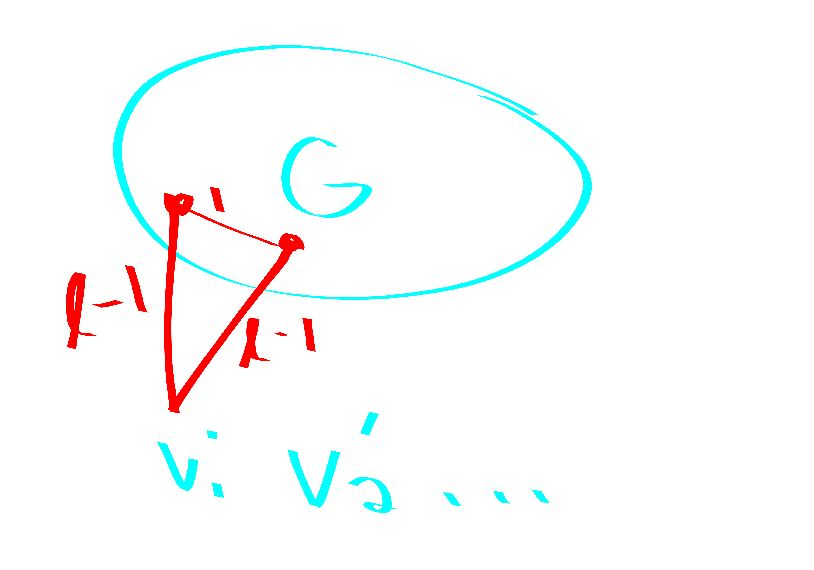

The topic today is taken from Virginia Williams’ MM + Graph Algs lecture notes. Throughout the post \(\omega<2.4\) is the matrix multiplication exponent. MM will stand for matrix multiplication.
General Notes on Exact Cycle Finding
Theorem. Let \(k\in \mathbb{N}_{\ge 3}\) be a constant. directed/undirected-\(k\)-cycle detection can be accomplished in \(n^{\omega}\) time on \(n\)-vertex graphs.
Proof. It suffices to prove the theorem for directed graphs. We won’t need to explicitely mention this throughout the proof, but just note that the adjacency matrices needn’t be symmetric.
For \(k=3\) you can just cube the adjacency matrix and check whether its trace is \(0\). This doesn’t work for \(k>3\) because powers of the adjacency matrix count walks, i.e., are allowed to repeat vertices.
Instead we do color coding! Color with \(k\) colors. Make matrices \(A_1,A_2,\ldots, A_{k-1}\) where \(A_i\) represents the transition from color \(i\) vertices to color \(i+1\) vertices. That is, fix some ordering of the vertices within each color class, and then make the rows of \(A_i\) be the vertices of color \(i\) and the columns of \(A_i\) be the vertices of color \(i+1\), and place edges if the vertices are adjacent.
Let \(B = A_1\cdot A_2\cdots A_{k-1}\); \(B\) can be computed in \(n^{\omega}\) time. \(B[u,v]\) counts the number of \(k\)-vertex paths from \(u\) to \(v\) whose vertices are colors \(1,2,\ldots, k\).
Now, for each \(u,v\) check whether \(A[v,u]=1 \land B[u,v]>0\). If the check ever passes then we have found a \(k\)-cycle.
If the cycle was correctly colored we must find a \(k\)-cycle in this manner.
The coloring succeeds with probability \(\frac{1}{k^{k}}\ge \Omega(1)\). Taking \(\Omega(\log n)\) tries for the coloring lets us succeed at least once with high probability.
It turns out that even cycle detection can be done in \(n^{2}\) time in undirected graphs. Now I establish that odd cycle detection does require \(n^{\omega}\) time. First we prove another interesting result:
Theorem. Let \(k\) be an odd constant. Then directed-\(k\)-cycle is equivalently hard to undirected-\(k\)-cycle.
Proof. We can convert an instance of undirected-\(k\)-cycle to directed-\(k\)-cycle by thinking of each edge \(\left\{ u,v\right\}\) as being two directed edges \(u\to v\) and \(v\to u\).
The other direction is more subtle. We are given an instance of directed-\(k\)-cycle. By color coding we assume that the graph has parts \(V_1,V_2,\ldots, V_k\) and we only consider edges from \(V_i\to V_{i+1}\). Let this new graph be \(G'\).
Let \(G''\) be the graph obtained by dropping the directionality on the edges in \(G'\).
Claim: \(G''\) has an undirected-\(k\)-cycle iff colorful \(G'\) has a directed \(k\)-cycle.
Proof of claim: If \(G'\) has a cycle then dropping the directionality won’t kill the cycle. If the cycle in \(G''\) uses a vertex from each of the \(k\) parts \(V_i\) then it is clearly a cycle in \(G'\). Assume for contradiction that there is a cycle in \(G''\) that doesn’t use some part \(V_i\). But \(G''\setminus V_i\) is bipartite, so it cannot contain an odd cycle.
Theorem. Let \(k\) be a constant. Directed-\(k\)-cycle is equivalently hard to triangle detection.
Proof. We already showed how to solve directed-\(k\)-cycle with MM.
Let \(G = (V, E)\) be a graph we want to do triangle detection in. Make \(k\) copies of the vertex set: \(V_1,V_2,\ldots, V_k\). We denote the copies of a vertex \(v\) by \(v_1,v_2,\ldots, v_k\).
Connect \(u_1\to v_2 \in V_1 \times V_2\) iff \((u,v)\in E(G)\).
Connnect \(u_k\to v_1 \in V_{k}\times V_1\) iff \((u,v) \in E(G)\)
For each \(i\in [2, k-1]\) and each vertex \(v\in V\) connect \(v_i\to v_{i+1}\in V_i \times V_{i+1}\).
A \(k\)-cycle in this new graph corresponds to a triangle in the original graph.
Finding Even Cycles
Theorem. “Even cycles Even Faster”
- For all \(k\), there is an \(n^{2}\) algorithm to detect existence of a \(2k\) cycle (and find it, if it exists).
- There is an \(n^{2}\) time algorithm to find the shortest even cycle.
First I present two simple proofs of the theorem for \(k=2\). Then I’ll present a proof for general \(k\).
Theorem. \(4\)-cycle, \(n^{2}\) time.
Proof. 1. Common neighbor(x,y): make an \(n \times n\) matrix \(A\). \(A[i,j]\) will store whether we have found a common neighbor for \(i,j\) so far. If any cell in the matrix ever gets hit twice then we found a \(4\)-cycle. What we do is, for each vertex \(v\), for each pair of vertices in \(N(v)\) mark them as having a common neighbor.
wlog its bipartite: In particular, take \(G=(V,E)\), and form \(G'\) by duplicating the vertex set to \(V\sqcup V'\) and put an edge between \(uv'\) if \(uv\) is an edge in \(G\). Then, if you had a \(4\)-cycle in \(G\) it is converted into a \(4\)-cycle in \(G'\). But of course \(G'\) is bipartite and only a constant-factor larger. Then, run BFS-cycle out of each vertex (for depth \(2\)). This must terminate fast. More precisely, for all vertices in the neighbor-set of one of your vertices color their left-neighbors. If a left-neighbor gets colored twice it means you have a \(C_4\).
Again, lets just work in bipartite graphs. wlog by Bond Simonivitis \(m\le 200 n^{1.5}\). Do a 2 step BFS out of some vertex \(v\) with degree \(\ge \sqrt{n}\). If we found a \(4\)-cycle then that’s lovely. Else, itterate over all \(w\in RHS\) and check if any of them have two neighbors in \(N(u)\) for any \(u\in N(v)\). This will take \(n^{1.5}\) time. If any of the checks pass, we get a \(4\)-cycle. Else, we can delete the vertices \(N(v)\): they are not part of any four-cycles. The gist is we keep paying \(n^{1.5}\) to kick \(\sqrt{n}\) vertices. Should pay \(n^{2}\) to kick all \(n\) vertices.
You can also get better results if your graph is extra sparse. 4. For instance, here’s an \(O(nm^{2/3})\) time algorithm: BFS-cycle out of all vertices with more than \(m^{1/3}\) degree, do a restricted BFS-cycle ignoring high degree vertices out of all vertices. Costs \[\frac{m}{H} n + nH^{2}.\] IMPORTANT: first make your graph bipartite before you do this, to kill triangles.
- \(m\sqrt{n}\) algorithm: again, we are going to assume bipartite (we can make a bipartite instance in \(O(m+n)\) time so this is legal; could also argue by color coding but that’s overkill).
BFS-cycle out of all vertices with degree larger than \(\sqrt{n}\)
Now we only focus on vertices of degree smaller than \(\sqrt{n}\)
for \((v,w)\in E(g)\)
- for \(x\in N(v)\)
- Mark \(x,w\) as friends, unless they were already friends in which case we have a \(4\)-cycle. Run time is \[\frac{m}{\sqrt{n}}n + m\sqrt{n}.\]
- for \(x\in N(v)\)
- \(O(m^{4/3}\) algorithm (ok, we’re assuming \(m\ge n\), here and always and forever)
degrees = [array storing hash-sets of which vertices are of each degree]
my_degree = [lookup table, for each vertex tells you where it is in the degree table]
while there are vertices with degree < 200 m^{1/3}:
delete some such vertex w
modify the degrees of the neighbors of w appropriately
if this resulted in a non-empty graph:
we have super-saturation in this graph, and insta-win
else:
Let v1,v2,... be the order that we deleted vertices in
for v = v1,v2, etc:
for each pair (a,b) in N(v):
mark a,b as friends,
unless they are already friends,
in which case we found a 4 cycleThe correctness of this algorithm is pretty clear. Now we analyze its performance.
First, assume that the resulting graph after the deletions is non-empty. It costs \(m^{1/3}\) to delete a vertex, because the vertex has low degree and we must update its neighbor’s degree counters. Finding the minimum degree vertex is always super cheap because we keep a sorted list. The super-saturation stuff is super cheap. So we pay \(nm^{1/3}\le m^{4/3}\) in this case.
Now, assume that the resulting graph after the deletions turns out to be empty. Then, we claim that if we do the construction from the previous method a bit more carefully stuff will work. You might hope that we can just immediately use the previous construction. But its not the case that all vertices have degree smaller than \(m^{1/3}\) here, they just did after some deletions. So, we will process vertices in this same order and achieve the same bound. Specifically, if we deleted the vertices in the order \(v_1,v_2,v_3,\ldots\) we first handle the edges out of \(v_1\), then delete \(v_1\) and handle the edges out of \(v_2\) etc. And when I say delete I really do mean clean up the adjacency lists of all of \(v_1\)’s friends; this should be find seeing as there are not so many of them. Anyways with this method you repeatedly take time \(|N(v_i)|^{2}\) (note it’s the number of neighbors after we have already deleted some neighbors) to kill \(|N(v_i)|\) edges. But of course we have our degree constraint. So the worse time-edge-killed tradeoff possible is \(m^{1/3}\) edges per \(m^{2/3}\) time. But even this way we will kill all edges after \(m^{2/3}\) steps. So we win in time \(m^{4/3}\).
Theorem. An \(\widetilde{O}(n^{2})\) time algo for \(6\)-cycle.
Proof. Important fact: any connected graph with average degree at least \(4\) has a \(4\)-edge path emenating from every vertex.
Corollary: in any graph \(G\) with average degree at least \(4\) we can find a \(4\)-edge path in \(G\) in linear time. Proof: First, if the edge density of \(G\) is more than \(n^{.1}\) we can do it by super-saturation in \(\log n\) time with high probability. Else, just do a \(2\)-step BFS (not BFS cycle) out of some vertex. And then its pretty easy.
We give an \(\widetilde{O}(n)\) algorithm that given a vertex \(v\) contained in a \(6\)-cycle outputs a \(6\)-cycle not-necessarily containing \(v\).
We BFS but we quit if there is every average degree at least \(4\) within a level of BFS or between levels of BFS. More particularly, let \(L_1,L_2,L_3\) be the levels of BFS.
Let \(G[L_i]\) denote the induced subgraph on vertices \(L_i\) and let \(G[L_i, L_{i+1}]\) denote the bipartite subgraph consisting of edges with one endpoint in \(L_i\) and the other endpoint in \(L_{i+1}\).
Case 1: \(G[L_1]\) has average degree at least \(4\). Then, find a connected component of \(G[L_1]\) with average degree at least \(4\); this can be done in linear time. Then, find a \(4\)-edge path in this connected component of \(G[L_1]\) and connect it to the BFS root \(v\): it’s a \(6\)-cycle!
Case 2: \(G[L_1, L_2]\) has average degree at least \(4\). Then, find a \(4\)-path in a connected component of \(G[L_1, L_2]\) with average degree at least \(4\) and connect it to the BFS root \(v\): it’s a \(6\)-cycle. Note the key fact that a \(4\)-edge path in a bipartite graph starts and ends in the same part.
Case 3: \(G[L_2]\) has average degree at least \(4\). Here we need a picture:  Basically, you find a \(4\)-path. If it contains a \(2\)-path that is connected to \(2\) separate vertices from \(L_1\) then that gives a \(6\)-cycle. If the \(4\)-path’s endpoints are connected to the same vertex in \(L_1\) we also get a \(6\)-cycle. Finally, if both of the above things fail we get a \(6\)-cycle on the other end. Or rather I should say, it is impossible for both of these things to fail.
Case 4: \(G[L_2, L_3]\) has average degree at least \(4\). Again this is great because this is bipartite so a \(4\)-path in it works ust the same way as a \(4\)-path in \(G[L_2]\) from case 3.
Case 5: Now, assuming all that stuff didn’t happen, we can win in time \(n\log n\) with high probability.
Let’s mark the vertices in \(L_2\) by which vertex from \(L_1\) they are reachable from. If a vertex in \(L_2\) is reachable from multiple \(L_1\) vertices, call that vertex extra-nice.
Then we want to find a vertex in \(L_3\) that is hit by two \(L_2\) vertices with distinct labels. E.g., a \(v_1\)-reachable and a \(v_2\)-reachable \(L_2\) vertex or an extra-nice vertex and any other vertex. Seems like this should be \(O(n)\) time because there are \(O(n)\) edges emenating from \(L_2\).
TODO: I think I must be wrong here, because this is quite a bit stronger than what the pset asked for.
Proof. EDIT: no this is not quite right. the problem is, BFS-cycle might return a smaller cycle than our target size!! so this doesn’t work. CAUTION.
goal: check whether our graph contains a \(2k\)-cycle Note: wlog \(m\le 200 n^{1+\frac{1}{k}}\) or else we are guaranteed to have a \(2k\)-cycle (even, super-saturation of \(2k\)-cycles. anyways, we can find them.)
Case 1: There exists a high degree vertex, say with degree larger than \(H\) somewhere on the cycle. There aren’t so many vertices like this. It costs \(\frac{m}{H} n\) to just BFS-cycle out of all the high degree vertices.
Case 2: Negation of case 1. i.e., all vertices on the cycle have degree smaller than \(H\). Then we can do BFS-cycle a bit more efficiently, in time \(n H^{k}\).
Balancing (1) and (2) gives:
\[ \frac{m}{H}n = nH^{k} \implies H = m^{1/(k+1)}.\]
This yields running time \[n m^{k/(k+1)} \le n n^{(1+1/k)(k/(k+1))} = n^{2}.\]
Girth
GIRTH: length of shortest cycle
some not-so-good algorithms that I made up
Proposition. 2-approx in \(n^2\) time. remark: This is kind of bad, we can get a \(+1\) approx in \(n^{2}\) time lol.
Proof. Let \(G=(V, E)\). form a new graph with vertex sets \(V, V'\). make an edge \(xy' \in G'\) for \(x\in V, y'\in V' \iff xy\in E(G)\). So \(G'\) is bipartite. claim: If G’ has a cycle of length \(k\) then G has a cycle of length at least \(k/2\). proof: I brute-forced k=6. It seems like it should be true in general.
recall: “even cycles even faster”: we can find even cycles (even is redundant because G’ is bipartite but whatever) in G’ in \(n^2\) time.
Theorem. There is an algorithm that, on graphs of girth \(g\le 100\) outputs a cycle of length at most \(g+25\) in time \(O(n^{1.999})\)
Proof.
If \[m \ge \Omega( n^{1+ \frac{1}{\left\lfloor (g+25)/2 \right\rfloor} }) \] then we have super-saturation of \(2\left\lfloor (g+25)/2 \right\rfloor\)-cycles. So wlog may assume this is not the case. Now, high-deg low-deg cases.
- High deg cost: \(n\cdot m/H\).
- Low deg cost: \(n\cdot H^{\left\lceil g/2 \right\rceil}\).
Balancing: \[H = m^{\frac{1}{\left\lceil g/2 \right\rceil+1}}.\]
So the cost is \[n m^{ \frac{\left\lceil g/2 \right\rceil}{\left\lceil g/2 \right\rceil+1} } \le n n^{\frac{\left\lceil g/2 \right\rceil}{\left\lceil g/2 \right\rceil+1} \cdot (1+\frac{1}{\left\lfloor (g+25)/2 \right\rfloor})}.\]
not clear how good this is.
relatively old work on girth approximation
additive \(1\)-approximation for girth in \(n^2\) time
Theorem. Given a graph \(G\) of girth \(g\) we will find a cycle of length at most \(g+1\) in time \(O(n^{2})\). Futhermore, if \(g\) is even the cycle we find will actually be of length \(g\).
Proof. Algorithm: BFS-Cycle out of every vertex. Run time: \(O(n^{2})\).
Exact Algorithm for Girth in \(n^{\omega}\) time
Theorem. Exact Algorithm for Girth in \(n^{\omega}\) time.
Proof. First run the additive \(1\)-approximation.
If it outputs a cycle of odd length we know it is equal to the girth. Else, call the length of the ouput cycle \(2\ell\). The girth is either \(2\ell\) or \(2\ell-1\).
So, now we would just like to determine whether \(G\) has a cycle of length \(2\ell-1\). At the beginning of this blog post we showed how to solve this with \(2\ell-2\) matrix multiplications. But that’s not going to cut it here, we don’t really have a bound on \(\ell\).
Here’s how we construct a triangle-detection instance: Make a new graph \(G'\). Place \(G\) in \(G'\). Then create copies of the vertices. Connect \(v\in V(G)\) and copy the copy \(w'\) of \(w\in V(G)\) if \(dist(v, w)=\ell-1\). We know this distance because of our BFS-ing.
\(G'\) has a triangle iff \(G\) has an \((2\ell-1)\)-cycle. 
Theorem. \(\widetilde{O}(n^{3}/m)\) time \(+3\) additive girth approx.
Proof.
- case 1: graph has \(O(n\log n)\) edges: just give up and do a quadratic time algorithm.
- case 2: graph has enough edges that we can find a good enough cycle via super-saturation: then just do that
- case 3: graph is reasonably sparse, but not crazy sparse.
- case 3.1: assume that all vertices on the cycle have degree at most \(n^{1/k}\).
- BFS-cycle for \(k-1\) levels, only visiting low degree vertices.
- case 3.2: there is a high degree vertex on the cycle. sample \(n/H\) vertices. this won’t necessarily hit a high degree vertex, but should at least hit a neighbor of a high degree vertex. So we could do a \(+3\) approx this way. Very few vertices we need to BFS out of here.
- case 3.1: assume that all vertices on the cycle have degree at most \(n^{1/k}\).
Theorem.
- “Finding and Counting Given Length Cycles” Alon Yuster Zwick:
- \(m^{4/3}\) algorithm for \(C_4\)’s
- \(m^{13/8}\) algorithm for \(C_6\)’s
- Count number of \(C_k\)’s for \(k\le 7\) in \(n^{\omega}\) time. Unlikely to be possible for \(C_8\)’s because \(K_4\)’s are harder than \(K_3\)’s.
Theorem. Every connected \(n\) vertex graph with \(kn\) edges has a \(k\)-edge path (not necessarily induced) emenating from every vertex.
Proof. We prove this by induction on \(k.\) For \(k=1\), the base case, this is quite clear. For \(k>1\) we induct on \(n\). Let \(G\) be an \(n+1\) vertex graph with at least \(k(n+1)\) edges.
Deleting any vertex may disconnect the graph into several connected components \(V_1,V_2,\ldots,V_\ell\). However, we claim that at least one of these connected components has average degree at least \(k-1\). You can check this. So to find the desired path, delete your vertex and then recursively find a \(k-1\) path in the connected component with highest average degree.
Theorem. Any graph with more than like \(200kn^{1+1/k}\) edges is super-saturated with \(2k\) cycles. I.e., we can find \(2k\)-cycles in such a graph super easily.
Theorem. There is a \(m^{2k/(k+1)}\) time algo for finding a \(2k\)-cycle in a \(m\)-edge graph, if one exists.
cutting-edge approximations
Remark. In “New Subquadratic Approximation Algorithms for the Girth” Knudsen talks about Virginia and Roditty’s paper. He observes that her algorithm outputs a cycle of size \(2\left\lceil g/2 \right\rceil + 2\left\lceil g/4 \right\rceil\) when the girth is \(g\). So technically for \(g=3\) this is a \(2\)-approx. But for larger values of \(g\) it is essentially a \(1.5\)-approx. And her algo is indeed \(n^{5/3}\).
Note: Knudsen gives a sub-quadratic algorithm that, if the girth is \(g\), returns a cycle with size at most \[2\left\lceil g/2 \right\rceil+2\left\lceil \frac{g}{2(k-1)} \right\rceil\le (1+\varepsilon)g + 3,\] for suitably large \(k\), although the run time is of course \(n^{2-1/k}\).
So I feel like the barrier to an \(o(n^{2})\) \((2-\varepsilon)\)-approx is really “given a graph with girth \(3\), can you find any of a triangle, a square, or a pentagon in subquadratic time?”
Theorem. There is an algorithm that, given an \(n\)-vertex graph \(G\) with girth \(g\ge 3\) outputs a cycle of length at most \[2\left\lceil g/2 \right\rceil+2\left\lceil g/4 \right\rceil\le 2g,\] in running time \(n^{5/3}\).
Proof. CAUTION I have not been especially careful with the floors and ceilings in this proof. They are really important if you care about small \(g\)! Beware.
Let \(C\) be a length \(g\) cycle in \(G\). Call a ball huge if it has size larger than \(n^{1/3}\).
Case 1: Some vertex \(v\in C\) has a huge \(t\)-radius ball, for some \(t\le \left\lceil g/4 \right\rceil\). Then, if we randomly sample a subset \(S\) of size \(n^{2/3}\log n\) we intersect with \(B\) with high probability. Imagine we ran BFS-cycle out of \(y\in B\). Then we would find a cycle of length at most \(g+2t \le 2g\). So what we do is run BFS-cycle out of all the points in \(S\). The cost of this is \(n^{2/3} \cdot n\le n^{5/3}\).
Case 2: No vertices on the cycle have huge \(\left\lceil g/4 \right\rceil\)-radius balls. Sort the vertices in the graph as \(v_1,v_2,\ldots, v_n\) based on how fast their ball gets huge, i.e., the smallest \(k\) such that their radius-\(k\) ball is huge. In particular, make it so that \(v_1\)’s ball becomes huge the slowest and \(v_n\)’s ball becomes huge the fastest. Let \(H_k\) denote the induced subgraph on \(v_1,v_2,\ldots, v_k\).
We do a BFS-Cycle from vertex \(k\) in \(H_k\) for each \(k\), except we stop once we have visited \(n^{2/3}\) vertices. Let \(k_0\) be the first index when all vertices of \(C\) are contained in \(H_{k_0}\). We claim that doing this limited BFS in \(H_{k_0}\) will find a cycle of length at most \(2g\).
Note that all vertices \(v\in H_{k_0}\) satisfy \(|B(v, \left\lceil g/4 \right\rceil)| \le n^{1/3}\) and thus \(|B(v, 2\left\lceil g/4 \right\rceil)|\le n^{2/3}\). Thus the BFS-cycle out of \(k_0\) will successfully find a cycle of length like at most \(4\left\lceil g/4 \right\rceil+1\) ish.
The run time of doing this is going to be \(n\cdot n^{2/3}\le n^{5/3}\).
Remark. Virginia gives a somewhat different proof of this in her lecture notes. I’m writing it down too so that I’ll maybe understand it.
Proof.
Let \(T_v\) denote the result of BFS-ing out of \(v\) until we get \(n^{1/3}\) vertices in the tree.
She also starts by BFS-ing out of an \((n^{1/3}\log n)\)-sized random set. (Basically. But she also checks that her random set intersects with all the \(T_v\)’s. Presumably this happens with high probability? so not sure why she’s checking it.) This handles the case that some vertex in the cycle has a very large \(\left\lfloor g/4 \right\rfloor\)-neighborhood.
But she handles the other case a bit differently from Knudsen. Case 2: Each \(v\in C\) has a \(\left\lfloor g/4 \right\rfloor\) ball of size at most \(n^{1/3}\). In this case we will compute the girth exactly.
Here’s the algorithm:
- for each \(v\)
- for each pair \(x,y \in T_v\)
- Insert \(v, d_{T_v}(x,y), p_{T_v}(x,y)\) into \(Q_{x,y}\)
- for each pair \(x,y \in T_v\)
- For each \(x,y\) where \(Q_{x,y}\) is non-empty:
- Sort the values in \(Q_{x,y}\)’s by distance.
- Find \(u,v\) such that \(d_{T_v}(x,y) + d_{T_u}(x,y)\) is minimized
- consider the cycle determined by \(x,y,u,v\) as defining the quarters.
Theorem. (Due to Knudsen et al, also from the paper “New Subquadratic Approximation Algorithms for the Girth”.)
There is a (multiplicative) \(\mathcal{O}(1)\)-approx for girth with running time \(n^{1+1/k}\) for any constant \(k\).
Proof. We present it for \(k=5\) for simplicity.
We are going to give a \(31\)-approximation or something.
Do each of the following things:
- Sample a set of \(n\) vertices, BFS-Cycle for \(n^{1/5}\) steps out of each of them.
- Sample a set of \(n^{4/5}\log n\) vertices, BFS-cycle for \(n^{2/5}\) steps out of each of these vertices.
- Sample a set of \(n^{3/5}\log n\) vertices, BFS-cycle for \(n^{3/5}\) steps out of each of these vertices.
- Sample a set of \(n^{2/5}\log n\) vertices, BFS-cycle for \(n^{4/5}\) steps out of each of these vertices.
- Sample a set of \(n^{1/5}\log n\) vertices, BFS-cycle for \(n^{5/5}\) steps out of each of these vertices.
Let \(C\) be a minimum length cycle.
Let \(r_0\) be the minimum \(r>0\) such that \(|B(C, \left\lceil g/2 \right\rceil(2^{r}-1))| \le n^{r/5}\). Then we have that \(|B(C, \left\lceil g/2 \right\rceil(2^{r_0-1}-1))| > n^{(r_0-1)/5}\).
We claim that we will find a pretty short cycle when we run the \(r_0\)-th itteration of our for-loop.
By a calculation we find that we will, with high probability, get some vertex \(u \in B(C, \left\lceil g/2 \right\rceil(2^{r_0-1}-1))\) in the set of size \(n^{\frac{6-r_0}{5})} \log n\) that we sample. Then if we BFS-cycle out of this dude we get the desired short cycle.
Theorem. In fact, in more recent work “Algorithmic trade-offs for girth approximation in undirected graphs” Virginia shows how to get an almost \(k\)-approximation in \(n^{1+1/k}\) time. (exponentially better than Knudsen’s result above!) More precisely, it outputs a cycle of length at most \(2k\left\lceil g/2 \right\rceil\) where \(g\) is the girth of \(G\).
There is also a version of this that gives a slightly different guarantee if the girth \(g\) is odd: it outputs a cycle of length at most \(2k\left\lfloor g/2 \right\rfloor+2\) in time \(O(m(n^{2}/m)^{1/k}).\)
Theorem. In “Algorithmic trade-offs for girth approximation in undirected graphs” Virginia gives an algorithm that takes as input parameters \(g_0,k\) and has the following guarantee:
- Either output a cycle of length \(\le 2k\) or fail. This algo runs in time \(O(\min(m, n^{1+1/k}))\).
- If fail, we can run another algorithm that will either:
- output a shortest cycle OR
- determine that the girth is larger than \(g_0\)
- \(O(n^{1+2/k})\) if \(g_0\in \left\{ 3,4\right\}\). Can also do \(O(m^{1+1/(k+1)})\) here.
- \(O(n^{1+3/k})\) if \(g_0=5\). Can also do \(O(m^{1+2/(k+1)})\) here.
- something some-what similar for \(g=6\).
For instance, if \(g_0=3\) and \(k=3\) we get: Either a cycle of length \(\le 6\) or a shortest cycle OR the algorithm declares the graph to be triangle free. All in running time \(n^{5/3}\).
Theorem. \(n^{1+1/(2-\varepsilon)}\) algo gives a cycle of length at most \((2-\varepsilon)g+4\) for \(g\le \lg^2 n\) and \((2-\varepsilon/2)g+3\) else. This is like a continuous extension of Knudsen’s similar result.
There is also some work on weighted graphs, e.g., “Improved girth approximation in weighted undirected graphs”.
And even work on directed graphs.
list of things to look up
relevant graph parameters that we could do case-work on: - degeneracy - capped walls? - arboricity